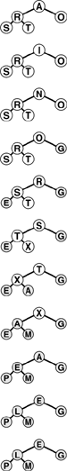
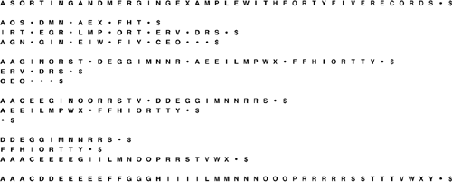
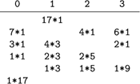
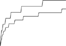

C++ Programming Robert Sedgewick - Princeton University Addison Wesley Professional Algorithms in C++, Parts 1–4: Fundamentals, Data Structure, Sorting, Searching, Third Edition
11.4. Sort–Merge Implementations
The general sort–merge strategy outlined in Section 11.3 is effective in practice. In this section, we consider two improvements that can lower the costs. The first technique, replacement selection, has the same effect on the running time as does increasing the amount of internal memory that we use; the second technique, polyphase merging, has the same effect as does increasing the number of devices that we use.
In Section 11.3, we discussed the use of priority queues for P-way merging, but noted that P is so small that fast algorithmic improvements are unimportant. During the initial distribution pass, however, we can make good use of fast priority queues to produce sorted runs that are longer than could fit in internal memory. The idea is to pass the (unordered) input through a large priority queue, always writing out the smallest element on the priority queue as before, and always replacing it with the next element from the input, with one additional proviso: If the new element is smaller than the one output most recently, then, because it could not possibly become part of the current sorted block, we mark it as a member of the next block and treat it as greater than all elements in the current block. When a marked element makes it to the top of the priority queue, we begin a new block. Figure 11.14 depicts the method in operation.
This sequence shows how we can produce the two runs AI N O R S T X and A E E G L M P, which are of length 8 and 7, respectively, from the sequence A S O R T I N G E X A M P L E using a heap of size 5.

Property 11.5. For random keys, the runs produced by replacement selection are about twice the size of the heap used|
If we were to use heapsort to produce initial runs, we would fill the memory with records, then write them out one by one, continuing until the heap is empty. Then, we would fill the memory with another batch of records and repeat the process, again and again. On the average, the heap occupies only one-half the memory during this process. By contrast, replacement selection keeps the memory filled with the same data structure, so it is not surprising that it does twice as well. The full proof of this property requires a sophisticated analysis (see reference section), although the property is easy to verify experimentally (see Exercise 11.47).
|
For random files, the practical effect of replacement selection is to save perhaps one merging pass: Rather than starting with sorted runs about the size of the internal memory, then taking a merging pass to produce longer runs, we can start right off with runs about twice the size of the internal memory. For P = 2, this strategy would save precisely one merging pass; for larger P, the effect is less important. However, we know that practical sorts rarely deal with random files, and, if there is some order in the keys, then using replacement selection could result in huge runs. For example, if no key has more than M larger keys before it in the file, the file will be completely sorted by the replacement-selection pass, and no merging will be necessary! This possibility is the most important practical reason to use replacement selection.
The major weakness of balanced multiway merging is that only about one-half the devices are actively in use during the merges: the P input devices and whichever device is collecting the output. An alternative is always to do (2P - 1)-way merges with all output onto device 0, then distribute the data back to the other tapes at the end of each merging pass. But this approach is not more efficient, because it effectively doubles the number of passes, for the distribution. Balanced multiway merging seems to require either an excessive number of tape units or excessive copying. Several clever algorithms have been invented that keep all the external devices busy by changing the way in which the small sorted blocks are merged together. The simplest of these methods is called polyphase merging.
The basic idea behind polyphase merging is to distribute the sorted blocks produced by replacement selection somewhat unevenly among the available tape units (leaving one empty) and then to apply a merge-until-empty strategy: Since the tapes being merged are of unequal length, one will run out sooner that the rest, and it then can be used as output. That is, we switch the roles of the output tape (which now has some sorted blocks on it) and the now-empty input tape, continuing the process until only one block remains. Figure 11.15 depicts an example.
In the initial distribution phase, we put the different numbers of runs on the tapes according to a prearranged scheme, rather than keeping the numbers of runs balanced, as we did in Figure 11.12. Then, we do three-way merges at every phase until the sort is complete. There are more phases than for the balanced merge, but the phases do not involve all the data.

The merge-until-empty strategy works for an arbitrary number of tapes, as shown in Figure 11.16. The merge is broken up into many phases, not all of which involve all of the data, and which involve no extra copying. Figure 11.16 shows how to compute the initial run distribution. We compute the number of runs on each device by working backward.
In the initial distribution for a polyphase three-way merge of a file 17 times the size of the internal memory, we put seven runs on device 0, four runs on device 2, and six runs on device 3. Then, in the first phase, we merge until device 2 is empty, leaving three runs of size 1 on device 0, two runs of size 1 on device 3, and creating four runs of size 3 on device 1. For a file 15 times the size of the internal memory, we put 2 dummy runs on device 0 at the beginning (see Figure 11.15). The total number of blocks processed for the whole merge is 59, one fewer than for our balanced merging example (see Figure 11.13), but we use two fewer devices (see also Exercise 11.50).

For the example depicted in Figure 11.16, we reason as follows: We want to finish the merge with 1 run, on device 0. Therefore, just before the last merge, we want device 0 to be empty, and we want to have 1 run on each of devices 1, 2, and 3. Next, we deduce the run distribution that we would need just before the next-to-last merge for that merge to produce this distribution. One of devices 1, 2, or 3 has to be empty (so that it can be the output device for the next-to-last merge)—we pick 3 arbitrarily. That is, the next-to-last merge merges together 1 run from each of devices 0, 1, and 2, and puts the result on device 3. Since the next-to-last merge leaves 0 runs on device 0 and 1 run on each of devices 1 and 2, it must have begun with 1 run on device 0 and 2 runs on each of devices 1 and 2. Similar reasoning tells us that the merge prior to that must have begun with 2, 3, and 4 runs on devices 3, 0, and 1, respectively. Continuing in this fashion, we can build the table of run distributions: Take the largest number in each row, make it zero, and add it to each of the other numbers to get the previous row. This convention corresponds to defining for the previous row the highest-order merge that could give the present row. This technique works for any number of tapes (at least three): The numbers that arise are generalized Fibonacci numbers, which have many interesting properties. If the number of runs is not a generalized Fibonacci number, we assume the existence of dummy runs to make the number of initial runs exactly what is needed for the table. The main challenge in implementing a polyphase merge is to determine how to distribute the initial runs (see Exercise 11.54).
Given the run distribution, we can compute the relative lengths of the runs by working forward, keeping track of the run lengths produced by the merges. For example, the first merge in the example in Figure 11.16 produces 4 runs of relative size 3 on device 0, leaving 2 runs of size 1 on device 2 and 1 run of size 1 on device 3, and so forth. As we did for balanced multiway merging, we can perform the indicated multiplications, sum the results (not including the bottom row), and divide by the number of initial runs to get a measure of the cost as a multiple of the cost of making a full pass over all the data. For simplicity, we include the dummy runs in the cost calculation, which gives us an upper bound on the true cost.
Property 11.6. With three external devices and internal memory sufficient to hold M records, a sort–merge that is based on replacement selection followed by a two-way polyphase merge takes about 1 +  logø(N/2M) logø(N/2M) /ø effective passes, on the average /ø effective passes, on the average|
The general analysis of polyphase merging, done by Knuth and other researchers in the 1960s and 1970s, is complicated, extensive, and beyond the scope of this book. For P = 3, the Fibonacci numbers are involved–hence the appearance of ø. Other constants arise for larger P. The factor 1/ø accounts for the fact that each phase involves only that fraction of the data. We count the number of "effective passes" as the amount of data read divided by the total amount of data. Some of the general research results are surprising. For example, the optimal method for distributing dummy runs among the tapes involves using extra phases and more dummy runs than would seem to be needed, because some runs are used in merges much more often than are others (see reference section).
|
For example, if we want to sort 1 billion records using three devices and enough internal memory to hold 1 million records, we can do so with a two-way polyphase merge with logø 500/ø = 8 passes. Adding the distribution pass, we incur a slightly higher cost (one pass) than a balanced merge that uses twice as many devices. That is, we can think of the polyphase merge as enabling us to do the same job with half the amount of hardware. For a given number of devices, polyphase is always more efficient than balanced merging, as indicated in Figure 11.17.
The number of passes used in balanced merging with 4 tapes (top) is always larger than the number of effective passes used in polyphase merging with 3 tapes (bottom). These plots are drawn from the functions in Properties 11.4 and 11.6, for N/M from 1 to 100. Because of dummy runs, the true performance of polyphase merging is more complicated than indicated by this step function.

As we discussed at the beginning of Section 11.3, our focus on an abstract machine with sequential access to external devices has allowed us to separate algorithmic issues from practical issues. While developing practical implementations, we need to test our basic assumptions and to take care that they remain valid. For example, we depend on efficient implementations of the input—output functions that transfer data between the processor and the external devices, and other systems software. Modern systems generally have well-tuned implementations of such software.
Taking this point of view to an extreme, note that many modern computer systems provide a large virtual memory capability–a more general abstract model for accessing external storage than the one we have been using. In a virtual memory, we have the ability to address a huge number of records, leaving to the system the responsibility of making sure that the addressed data are transferred from external to internal storage when needed; our access to the data is seemingly as convenient as is direct access to the internal memory. But the illusion is not perfect: As long as a program references memory locations that are relatively close to other recently referenced locations, then transfers from external to internal storage are needed infrequently, and the performance of virtual memory is good. (For example, programs that access data sequentially fall in this category.) If a program's memory accesses are scattered, however, the virtual memory system may thrash (spend all its time accessing external memory), with disastrous results.
Virtual memory should not be overlooked as a possible alternative for sorting huge files. We could implement sort–merge directly, or, even simpler, could use an internal sorting method such as quicksort or mergesort. These internal sorting methods deserve serious consideration in a good virtual-memory environment. Methods such as heapsort or a radix sort, where the the references are scattered throughout the memory, are not likely to be suitable, because of thrashing.
On the other hand, using virtual memory can involve excessive overhead, and relying instead on our own, explicit methods (such as those that we have been discussing) may be the best way to get the most out of high-performance external devices. One way to characterize the methods that we have been examining is that they are designed to make as many independent parts of the computer system as possible work at full efficiency, without leaving any part idle. When we consider the independent parts to be processors themselves, we are led to parallel computing, the subject of Section 11.5.
Exercises |  11.45 Give the runs produced by replacement selection with a priority queue of size 4 for the keys E A S Y Q U E S T I O N. 11.45 Give the runs produced by replacement selection with a priority queue of size 4 for the keys E A S Y Q U E S T I O N.
| |  11.46 What is the effect of using replacement selection on a file that was produced by using replacement selection on a given file? 11.46 What is the effect of using replacement selection on a file that was produced by using replacement selection on a given file?
| |  11.47 Empirically determine the average number of runs produced using replacement selection with a priority queue of size 1000, for random files of size N = 103, 104, 105, and 106. 11.47 Empirically determine the average number of runs produced using replacement selection with a priority queue of size 1000, for random files of size N = 103, 104, 105, and 106.
| | 11.48 What is the worst-case number of runs when you use replacement selection to produce initial runs in a file of N records, using a priority queue of size M with M < N? | | 11.49 Show how the keys E A S Y Q U E S T I O N W I T H P L E N T Y O F K E Y S are sorted using polyphase merging, in the style of the example diagrammed in Figure 11.15. | | | | 11.50 In the polyphase merge example of Figure 11.15, we put two dummy runs on the tape with 7 runs. Consider the other ways of distributing the dummy runs on the tapes, and find the one that leads to the lowest-cost merge. | | 11.51 Draw a table corresponding to Figure 11.13 to determine the largest number of runs that could be merged by balanced three-way merging with five passes through the data (using six devices). | | 11.52 Draw a table corresponding to Figure 11.16 to determine the largest number of runs that could be merged by polyphase merging at the same cost as five passes through all the data (using six devices). | | 11.53 Write a program to compute the number of passes used for multiway merging and the effective number of passes used for polyphase merging for a given number of devices and a given number of initial blocks. Use your program to print a table of these costs for each method, for P = 3, 4, 5, 10, and 100, and N = 103, 104, 105, and 106. | |  11.54 Write a program to assign initial runs to devices for P-way polyphase merging, sequentially. Whenever the number of runs is a generalized Fibonacci number, the runs should be assigned to devices as required by the algorithm; your task is to find a convenient way to distribute the runs, one at a time. 11.54 Write a program to assign initial runs to devices for P-way polyphase merging, sequentially. Whenever the number of runs is a generalized Fibonacci number, the runs should be assigned to devices as required by the algorithm; your task is to find a convenient way to distribute the runs, one at a time.
| | 11.55 Implement replacement selection using the interface defined in Exercise 11.38. | | 11.56 Combine your solutions to Exercise 11.38 and Exercise 11.55 to make a sort–merge implementation. Use your program to sort as large a file as is feasible on your system, using polyphase merging. If possible, determine the effect on the running time of increasing the number of devices. | | 11.57 How should small files be handled in a quicksort implementation to be run on a huge file in a virtual-memory environment? | | 11.58 If your computer has a suitable virtual memory system, empirically compare quicksort, LSD radix sort, MSD radix sort, and heapsort for huge files. Use as large a file size as is feasible. | | 11.59 Develop an implementation for recursive multiway mergesort based on k-way merging that would be suitable for sorting huge files in a virtual-memory environment (see Exercise 8.11). | | 11.60 If your computer has a suitable virtual memory system, empirically determine the value of k that leads to the lowest running time for your implementation for Exercise 11.59. Use as large a file size as is feasible. |
|